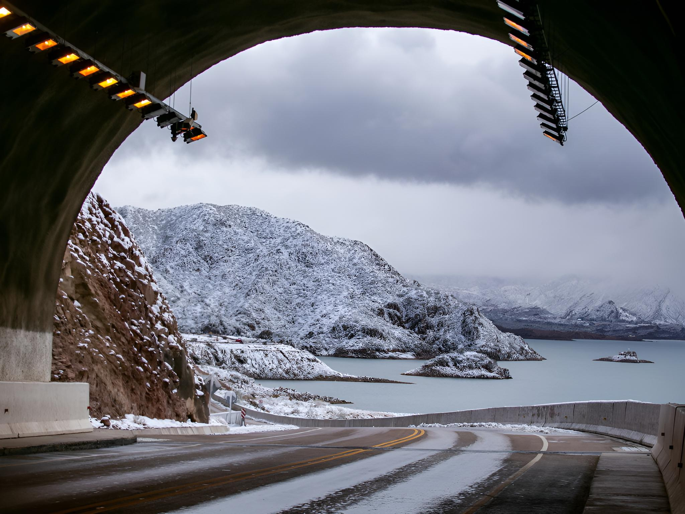

Mendoza: la capital del vino
Mendoza, ubicada al pie de la Cordillera de los Andes, es famosa por sus viñedos, bodegas y la producción de vinos de alta calidad. La ciudad combina cultura, gastronomía y paisajes que invitan a explorar.
La Ruta del Vino permite visitar diferentes bodegas, aprender sobre el proceso de elaboración y degustar varietales locales mientras se disfruta de vistas espectaculares de los Andes. Además, Mendoza ofrece actividades al aire libre como trekking, rafting, cabalgatas y paseos en bicicleta por los viñedos.
El Parque General San Martín es otro atractivo imperdible, con lagos, jardines, monumentos y una gran vista de la ciudad desde la cima del Cerro de la Gloria. La gastronomía mendocina, con platos típicos y parrillas, completa la experiencia.
La mejor época para visitar es entre marzo y mayo o septiembre y noviembre, cuando el clima es agradable y los viñedos lucen espectaculares. Sin embargo, cada estación tiene su encanto: el verano invita a disfrutar de las actividades al aire libre, mientras que el otoño ofrece los colores dorados de la vendimia.
Mendoza es un destino que combina naturaleza, aventura, cultura y, por supuesto, los mejores vinos del país. Una ciudad que una vez que conocés, te deja con ganas de volver para seguir explorando todo lo que tiene para ofrecer.
← Volver a Categorías